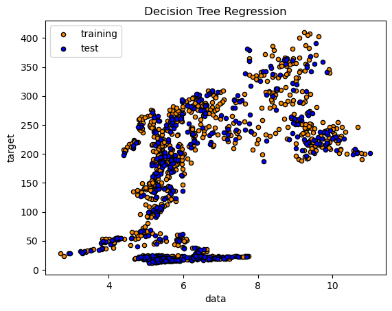
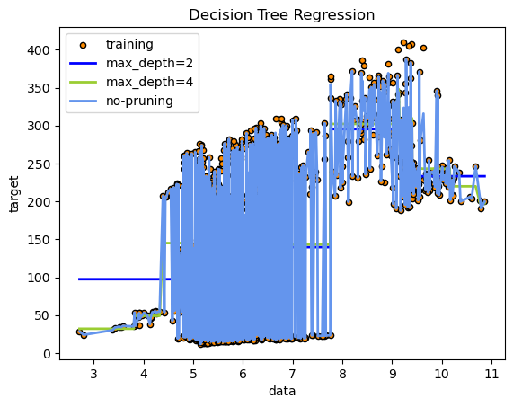
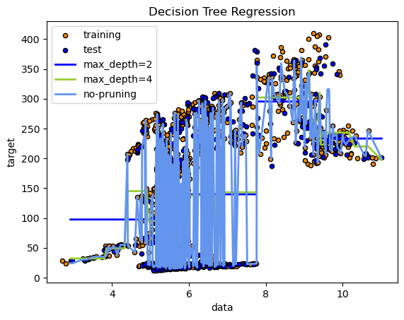
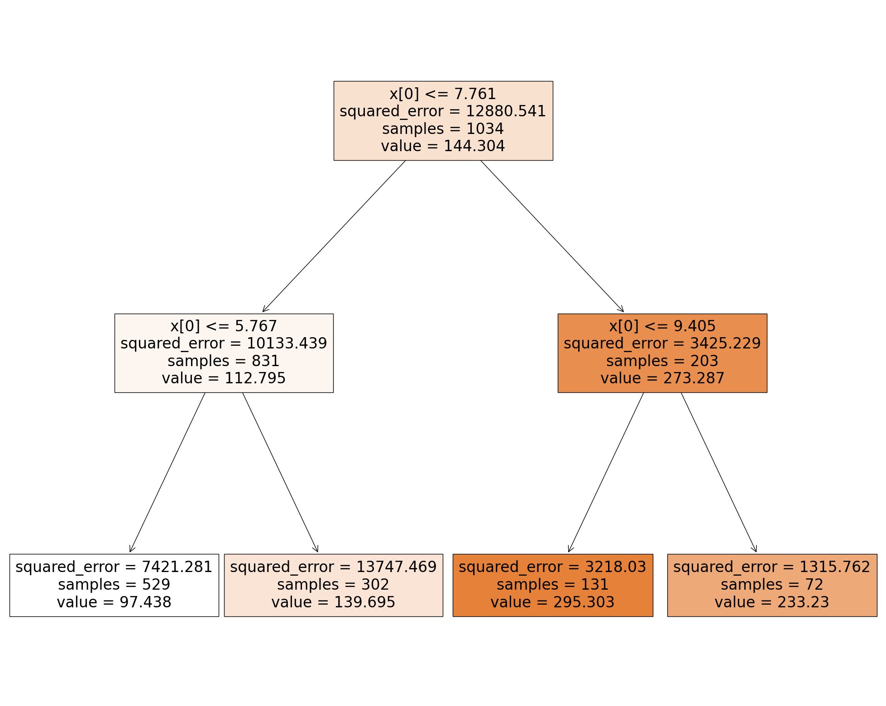
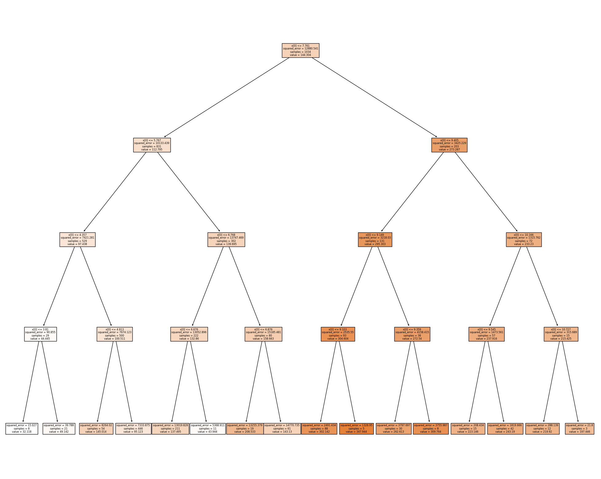
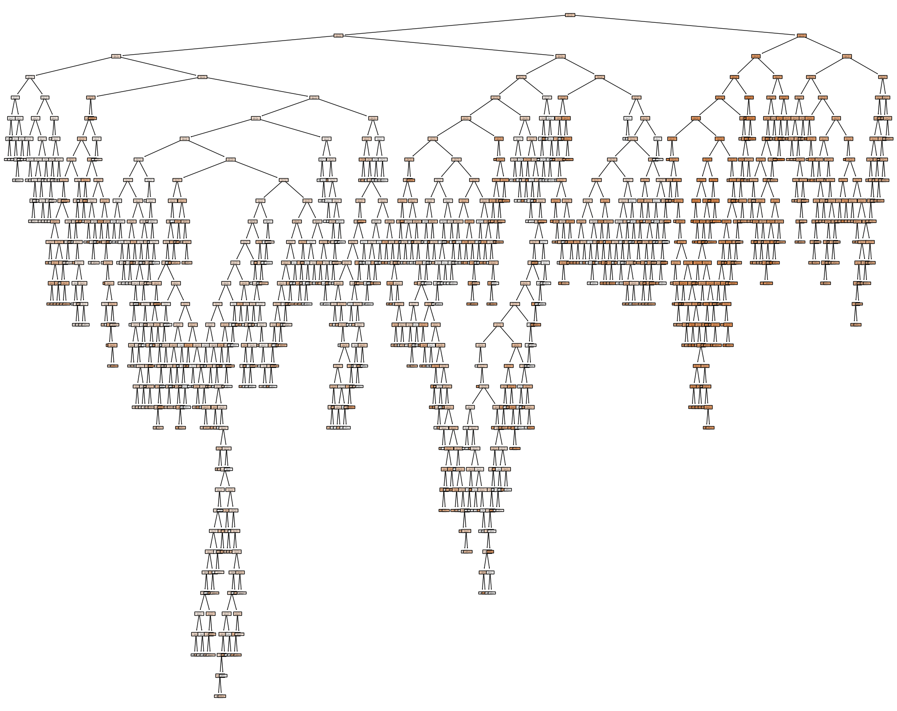

import matplotlib.pyplot as plt
import pandas as pd
from sklearn.feature_extraction.text import CountVectorizer
import numpy as np
from sklearn.metrics import accuracy_scoreImport
Read and re-format
#RELOAD FILE AND PRETEND THAT IS OUR STARTING POINT
df = pd.read_csv('../eda/stock.csv') print(df.head())
print(df.shape) STLA GM TM NSANY MBGYY BMWYY \
0 11.472709 37.606457 128.369995 20.040001 15.427057 25.132998
1 11.945812 38.524128 130.130005 20.250000 15.544848 25.270378
2 12.854664 39.711697 132.160004 20.230000 15.751436 25.443905
3 13.551867 39.594738 133.860001 20.389999 15.934467 25.740355
4 13.433592 39.783672 134.770004 20.440001 16.003330 25.913887
POAHY TSLA Dates
0 6.742718 21.368668 2018-01-02
1 6.887550 21.150000 2018-01-03
2 7.072613 20.974667 2018-01-04
3 7.145028 21.105333 2018-01-05
4 7.161120 22.427334 2018-01-08
(1478, 9)df = df[['POAHY', 'TSLA']]df.head()| POAHY | TSLA | |
|---|---|---|
| 0 | 6.742718 | 21.368668 |
| 1 | 6.887550 | 21.150000 |
| 2 | 7.072613 | 20.974667 |
| 3 | 7.145028 | 21.105333 |
| 4 | 7.161120 | 22.427334 |
# Converting X and y to 2D arrays by using a list of lists
X = df.iloc[:, [0]].values # Selects all rows and only the first column and keeps as 2D
y = df.iloc[:, [1]].values # Selects all rows and only the second column and keeps as 2D
X, y(array([[6.74271774],
[6.88754988],
[7.07261276],
...,
[4.6500001 ],
[4.67000008],
[4.90999985]]),
array([[ 21.3686676 ],
[ 21.14999962],
[ 20.9746666 ],
...,
[214.6499939 ],
[223.71000671],
[237.41000366]]))print(X.shape,y.shape)(1478, 1) (1478, 1)from sklearn.model_selection import train_test_split
x_train, x_test, y_train, y_test = train_test_split(X, y, test_size=0.3, random_state=0)
print("TRAINING SHAPES:",x_train.shape,y_train.shape)
print("TEST SHAPES:",x_test.shape,y_test.shape)TRAINING SHAPES: (1034, 1) (1034, 1)
TEST SHAPES: (444, 1) (444, 1)# # Plot the initial data
plt.figure()
plt.scatter(x_train, y_train, s=20, edgecolor="black", c="darkorange", label="training")
plt.scatter(x_test, y_test, s=20, edgecolor="black", c="b", label="test")
plt.xlabel("data")
plt.ylabel("target")
plt.title("Decision Tree Regression")
plt.legend()
plt.show()
from sklearn.tree import DecisionTreeRegressor
regr_1 = DecisionTreeRegressor(max_depth=2)
regr_2 = DecisionTreeRegressor(max_depth=4)
regr_3 = DecisionTreeRegressor(max_depth=50)
regr_1.fit(x_train, y_train)
regr_2.fit(x_train, y_train)
regr_3.fit(x_train, y_train)
y_1 = regr_1.predict(sorted(x_test))
y_2 = regr_2.predict(sorted(x_test))
y_3 = regr_3.predict(sorted(x_test))from sklearn.metrics import mean_absolute_error
print("MODEL-1: Training, test MAE:",mean_absolute_error(y_train, regr_1.predict(x_train)),mean_absolute_error(y_test, regr_1.predict(x_test)))
print("MODEL-2: Training, test MAE:",mean_absolute_error(y_train, regr_2.predict(x_train)),mean_absolute_error(y_test, regr_2.predict(x_test)))
print("MODEL-3: Training, test MAE:",mean_absolute_error(y_train, regr_3.predict(x_train)),mean_absolute_error(y_test, regr_3.predict(x_test)))
# from sklearn.metrics import mean_absolute_percentage_error
# print("MODEL-1: Training, test MAPE:",mean_absolute_percentage_error(y_train, regr_1.predict(x_train)),mean_absolute_percentage_error(y_test, regr_1.predict(x_test)))
# print("MODEL-2: Training, test MAPE:",mean_absolute_percentage_error(y_train, regr_2.predict(x_train)),mean_absolute_percentage_error(y_test, regr_2.predict(x_test)))
# print("MODEL-3: Training, test MAPE:",mean_absolute_percentage_error(y_train, regr_3.predict(x_train)),mean_absolute_percentage_error(y_test, regr_3.predict(x_test)))
# from sklearn.metrics import mean_squared_error
# print("MODEL-1: Training, test MSE:",mean_squared_error(y_train, regr_1.predict(x_train)),mean_squared_error(y_test, regr_1.predict(x_test)))
# print("MODEL-2: Training, test MSE:",mean_squared_error(y_train, regr_2.predict(x_train)),mean_squared_error(y_test, regr_2.predict(x_test)))
# print("MODEL-3: Training, test MSE:",mean_squared_error(y_train, regr_3.predict(x_train)),mean_squared_error(y_test, regr_3.predict(x_test)))MODEL-1: Training, test MAE: 80.82229323529546 83.2379992411983
MODEL-2: Training, test MAE: 77.02593400309358 80.0420082334354
MODEL-3: Training, test MAE: 7.291053594189737 60.199355760115694plt.figure()
plt.scatter(x_train, y_train, s=20, edgecolor="black", c="darkorange", label="training")
plt.plot(sorted(x_train), regr_1.predict(sorted(x_train)), color="b", label="max_depth=2", linewidth=2)
plt.plot(sorted(x_train), regr_2.predict(sorted(x_train)), color="yellowgreen", label="max_depth=4", linewidth=2)
plt.plot(sorted(x_train), regr_3.predict(sorted(x_train)), color="cornflowerblue", label="no-pruning", linewidth=2)
plt.xlabel("data")
plt.ylabel("target")
plt.title("Decision Tree Regression")
plt.legend()
plt.show()
plt.figure()
plt.scatter(x_train, y_train, s=20, edgecolor="black", c="darkorange", label="training")
plt.scatter(x_test, y_test, s=20, edgecolor="black", c="b", label="test")
plt.plot(sorted(x_test), y_1, color="b", label="max_depth=2", linewidth=2)
plt.plot(sorted(x_test), y_2, color="yellowgreen", label="max_depth=4", linewidth=2)
plt.plot(sorted(x_test), y_3, color="cornflowerblue", label="no-pruning", linewidth=2)
plt.xlabel("data")
plt.ylabel("target")
plt.title("Decision Tree Regression")
plt.legend()
plt.show()
from sklearn import tree
def plot_tree(model):
fig = plt.figure(figsize=(25,20))
_ = tree.plot_tree(model,
filled=True)
plt.show()
plot_tree(regr_1)
plot_tree(regr_2)
plot_tree(regr_3)

